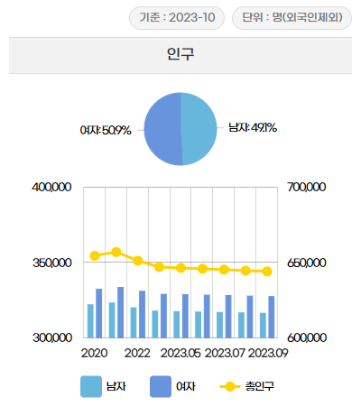

전주시 경제·산업동향
경제 산업 동향은전북/전주에 관한 산업활동, 소비, 고용행정, 경기조사, 소비자동향, 무역, 부동산 7개 항목으로 구성되어 있습니다.
단계별 선택 구조로 분류 카테고리 선택 후, 항목선택을 하시면 해당 데이터 내용을 확인하실 수 있습니다.
경제·산업 지표 세부 내용
| 구분 | 주요내용 | 표현범위 | 갱신주기 | 출처 |
|---|---|---|---|---|
| 산업활동 |
제조업(생산/출하/재고지수) 서비스업 생산지수 소비판매액지수 등 |
전북 | 월간 | 한국은행전북본부 |
|
일반산업단지 (입주업체/가동업체/고용현황 등) |
전주, 전북 | 분기 | 한국산업단지공단 | |
|
사업자 등록현황 (총합게, 업종별) |
전주 | 월간 | 국세청 국세통계 | |
| 물가 | 소비자물가 (총지수/상품/농축수산물/공업제품 등) | 전주, 전북 | 연간 |
통계청 「소비자물가조사」 |
| 생활물가지수(총지수) | 전북 | 월간 | 한국은행전북본부 | |
| 고용 | 고용률·실업률 | 전주, 전북 | 반기 |
통계청 「지역별고용조사」 |
| 경제활동 인구 | 전주, 전북 | 분기 |
통계청 「지역별고용조사」 |
|
|
실업급여 (인정자수,지급건수, 실업급여액) |
전주, 전북 | 월간 | 한국고용정보원 | |
|
구인·구직·취업 현황 (구인인원, 구직건수, 취업건수) |
전주 | 월간 | 한국고용정보원 | |
| 경기동향 |
기업(제조업/비제조업) 전통시장(체감/전망) 소상공인(체감/전망) |
전북 | 월간 |
한국은행전북본부 소상공인시장진흥공단 |
| 소비자동향 |
소비자심리지수 소비지출전망 |
전북 | 월간 |
한국무역협회 전북본부지부 |
| 무역 | 수출/수입/수지 | 전주, 전북 | 월간 |
한국무역협회 전북본부지부 |
| 부동산 |
아파트 매매가격지수 아파트 전세가격지수 |
전주, 전북 | 월간 | 한국부동산원 |
|
미분양주택 현황보고 |
전주, 전북 | 월간 | 국토교통부 | |
| 부동산거래량(토지/아파트) | 전주, 전북 | 연간 | 한국부동산원 | |
| 지가변동률 | 전주, 전북 | 월간 | 한국부동산원 |
인구·가구
